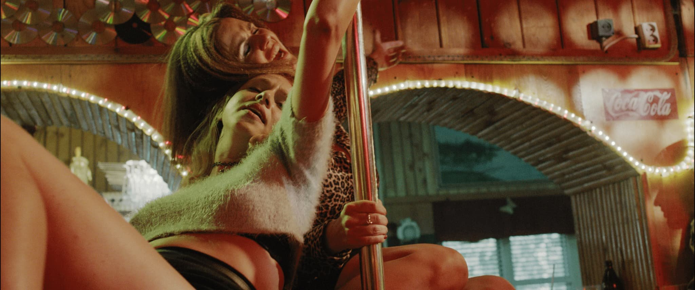
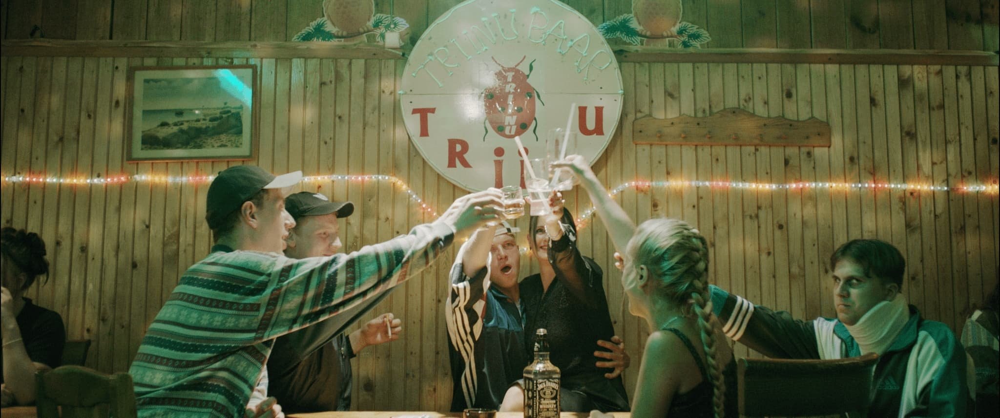
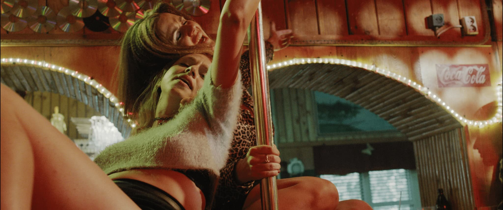
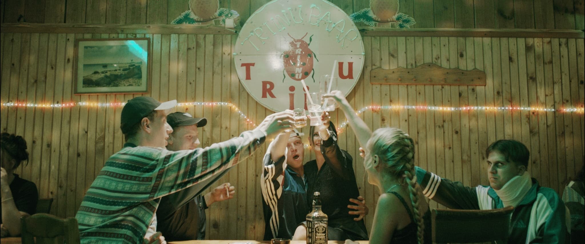

The tragicomedy "The Days That Confused", laced with pitch-black humor, unfolds in the late 1990s. The film's main character, 27-year-old Allar, drifts from one midsummer party in Estonia to the next, encountering increasingly colorful characters and bewildering situations. Tense, absurd events compel Allar to reflect on his life, leading to a chaotic journey of self-discovery amid Estonia's vibrant nineties backdrop.
Süsimusta huumoriga vürtsitatud tragikomöödia "Päevad, mis ajasid segadusse" tegevus toimub 1990. aastate teises pooles. Filmi peategelane Allar (27) liigub ühelt südasuviselt Eestimaa peolt teisele, põrkudes kokku üha värvikamate tegelaste ja segasemate juhtumitega. Pingelised ja jaburad sündmused panevad Allari oma elu üle tõsiselt järele mõtlema ning ees ootab pöörane eneseotsing Eesti üheksakümnendates.


 


